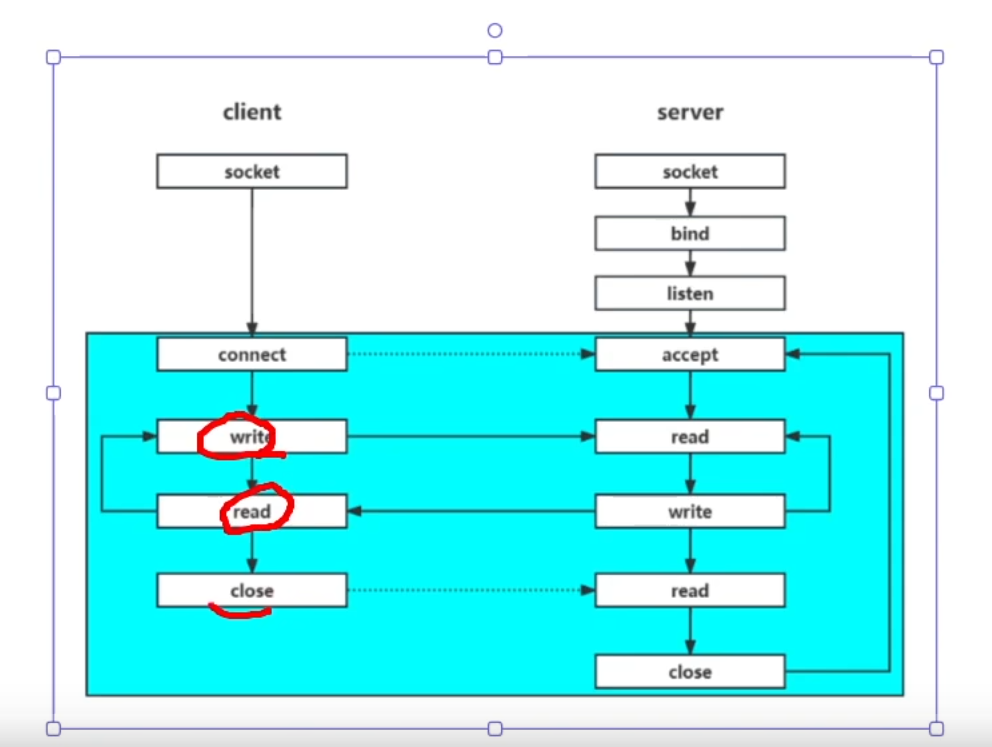

第一章 网络IO，IO多路复用，网络编程接口
1.客户端和服务端通信流程
网络IO通信流程图
client流程创建socket->调用connect ->需要连接的目的IP和目的端口->连接成功基于socke收发数据，循环往复的接受发送数据
server流程创建socket，绑定服务器IP和端口->监听端口，此时客户端调用connect->tcp三次握手（内核态）->服务端accept->处
于阻塞这台，此时可获取标识此客户端的socket
listenfd == serverfd
int clientfd = accept(listenfd,&addr,&len)
int n = read(clientfd,buf,sz)
accept作用于三次握手中最后一次握手客户端返回ACK的之后，会有全连接队列，这时accept取出一个节点，构造clientfd，客户端源IP地址和端口，循环往复的接受客户端数据，处理客户端数据，发送给客户端数据，当客户端已经调用close，断开连接，会有四次挥手，在第一次挥手时会返回一个fin包，此时server端会在recv_buffer写一个字节EOF,read读取EOF时，n返回0即read返回值为0,
clientfd内核中对应一个接受缓冲区recv_buff，和一个发送缓冲区send_buff
sz为预期读取字节//不知道客户端发送了多少数据
n为实际拿到的字节
buf用户态容器，将内核态buff拷贝到buff来
int n = write(clientfd,buff,sz)
n为实际写入的字节数量
阻塞线程等待客户端发送数据
 阻塞网络IO通信
阻塞网络IO通信
阻塞网络IO通信 阻塞IO与非阻塞IO的区别
1.什么是阻塞 IO未就绪的情况下，会阻塞线程
2.什么决定是阻塞IO还是非阻塞IO？ socket属性 默认情况下是阻塞的 fnctl接口设置非阻塞
fcntl(new_fd,F_SETEL,O_NONBLOCK)
3.区别在就绪情况下即数据拷贝状态无论使用阻塞或者非阻塞都是在执行拷贝的行为，区别在于IO未就绪的情况下，即read/recv无数据时，阻塞IO阻塞线程等待，非阻塞不会阻塞线程
网络IO流程，
IO多路复用
当使用阻塞IO时，需要有一个线程去对应一个客户端（对应一条链接）
复用：用一个线程同时检测多路socket是否就绪
io多路复用是否可以操纵IO，不可以，只能检测recv_buffer和全连接队列中是否有数据
网络io也可以检测socket是否就绪，但是只能检测一个socket
io多路复用共有三种接口，select,poll,epoll
区别
select:数组实现，1024限制
poll:链表，无限制
epoll：红黑树，无限制
为什么需要io多路复用，非阻塞IO不知道什么时机去调用read/recv，只能轮询确认read/recv是否存在数据，io多路复用刚好可以解决什么时间去调用网络io
边缘触发和水平触发
1，上述为io多路复用触发的模式
2.不同io多路复用的触发方式 select\poll\epoll
select\poll只有水平触发
epoll 既有水平触发和边缘触发
具体
int n = epoll_wait（epfd,evs,evs_len,timeout)